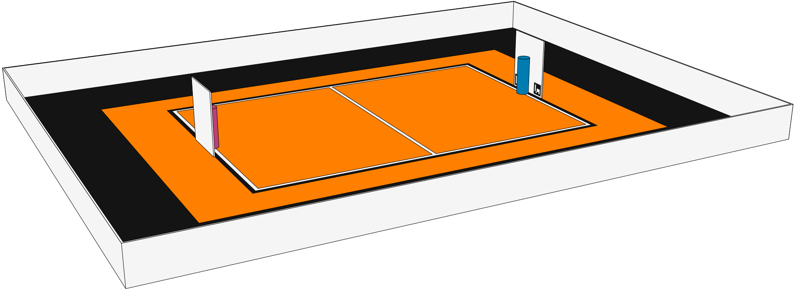
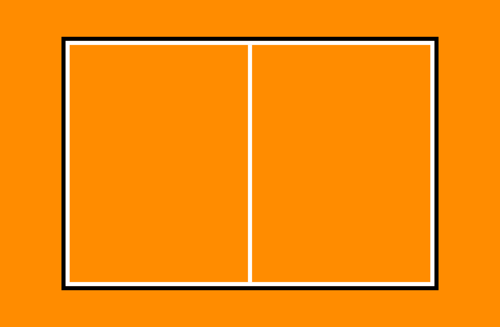
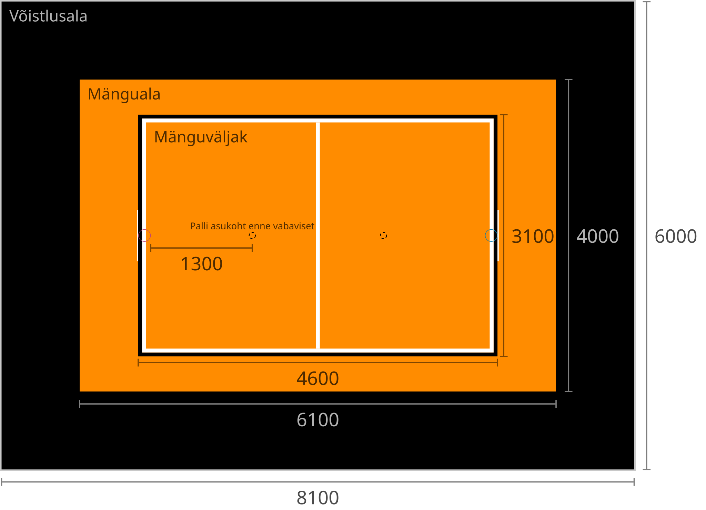
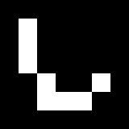
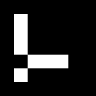
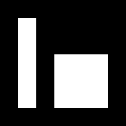
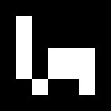
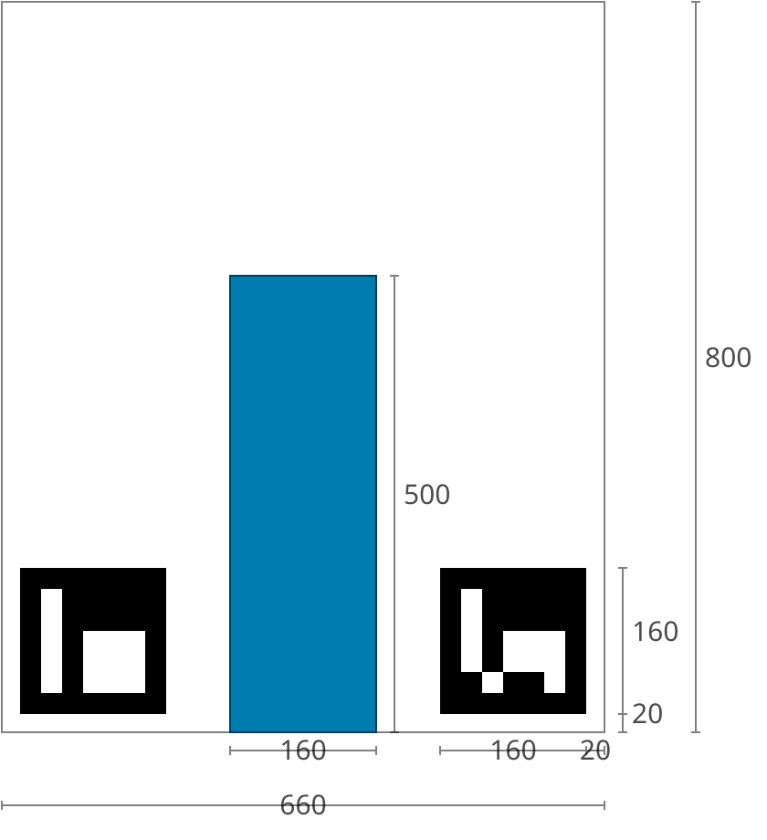

1. Tutvustus
Võistluse eesmärk on jäljendada korvpalli võistlust. Väljakul on korraga 2 robotit, kelle eesmärgiks on teatud aja jooksul saada võimalikult palju palle vastase korvi.
2. Väljak
2.1. Üldine
Võistlusväljaku üldist plaani vaata Joonis 1.

2.2. Mõõtmed
Võistlusala on jagatud kolmeks erinevaks tsooniks.
-
Mänguväljak on ristkülikukujuline, pikkusega 4600 mm ja laiusega 3100 mm. Ääremärgistus (valged ja mustad jooned) on osa mänguväljakust.
-
Mänguala sisaldab võistlusala ja lisatsooni robotitele liikumiseks. Ala pikkus on 6100 mm ja laius 4000 mm.
-
Võistlejateala on 950 - 1000 mm laiune musta värvi vaip mänguala ümber.
2.3. Väljaku kate
Väljaku mänguala katteks on oranž viltmatt (ExpoRips 2007). Vaibaalune pind on ühtlane ja kõva. Väljaku võistlejateala on must vaip. Võistlusala välispiiril on vähemalt 450 mm kõrgused valged seinad.
2.3.1. Võistlusala märgistus


Mänguväljak on märgistatud valgete joontega ning lisaks ka mustade joontega mänguala välimises servas. Jooned (mustad ja valged) kuuluvad mänguväljaku juurde. Kõik jooned on 50 mm laiused. Mänguväljak on valge keskjoonega jagatud kaheks pooleks.
3. AR markerid
Mõlema korvilaua külge on kinnitatud kaks 160 x 160 mm suurust ArUco markerit. Markerid on kinnitatud tagalaua alumistele nurkadele. Markerid on näha Joonis 4, Joonis 5, Joonis 6 ja Joonis 7. Markerite täpne asetus koos mõõtmetega on leitav Joonis 8.
Markerid on tuvastatavad markeri ID järgi:
-
11 vasakul pool magenta korvi
-
12 paremal pool magenta korvi
-
21 vasakul pool sinist korvi
-
22 paremal pool sinist korvi
ArUco markerite generaator on leitav: http://chev.me/arucogen/.




4. Korvid
Korvid on paigutatud mänguväljaku otsajoonte (lühemate servade) keskele väljakuga samale tasapinnale. Tagalaua korvipoolne sein on kohakuti musta joone välimise servaga. Mänguväljakul on üks korv märgistatud sinise (värvikood: RAL5015) ning teine korv magenta (värvikood: RAL4010) mattvärviga. Mänguväljakut koos korvidega on võimalik näha Joonis 1 ja Joonis 3.
Korv on värviline toru järgmiste mõõtudega:
-
kõrgus 500 mm
-
välisdiameeter 160 mm
-
sisediameeter 148 mm
Korvi küljes on maani ulatuv valget värvi tagalaud mõõtmetega 660 x 800 mm. Korvi mõõtmed on näha Joonis 8.

5. Pallid
5.1. Mõõdud ja omadused
Pallid on rohelised mini squash'i pallid massiga ligikaudu 24 g ja diameetriga ligikaudu 40 mm.
5.2. Pallide asetus
Iga vooru alguses on väljakul 11 palli. Pallide asetus on juhuslik, aga mõlema roboti jaoks sümmeetriline väljaku diagonaali suhtes. Mängude jaoks koostatakse vähemalt 10 erinevat pallide paiknemise kombinatsiooni. Pallide asetus ei muutu mängu jooksul. Palle võivad mänguvooru ajal liigutada ainult selles mängus võistlevad robotid.
6. Robotite arv ja võistkonna suurus
Mängu jooksul on väljakul korraga võistlemas 2 robotit, 1 robot kummagi võistkonna kohta. Võistkonna suurus registreerimisel on kuni 6 liiget.
7. Võistlusalas viibimine
7.1. Robotid
-
Mängu ajal võivad võistlusalas viibida ainult selles mängus võistlevad robotid.
7.2. Kõik inimesed
-
Mängude ajal ei tohi võistlusalas liikujate riietuses olla väljaku ega korvide värve (v.a must).
7.3. Võistkonna liikmed
-
Mängu kestel on lubatud võistlusalas viibida ainult võistlevate võistkondade liikmetel.
-
Käimasoleva mängu ajal on roboti käivitamiseks lubatud mängualas (väljaspool mänguväljakut) viibida mõlemast võistkonnast ainult ühel liikmel. Pärast roboti käivitamist tuleb võistlusalast lahkuda.
-
Kui mänguvoor on peatatud, on kummastki võistkonnast lubatud võistlusalas viibida kuni kahel liikmel.
-
Mänguvoorude vahelisel ajal on lubatud võistlusalas viibida kogu võistkonnal.
-
Mängude vahelisel ajal on lubatud võistlusalas viibida ainult algava mängu võistkondadel.
7.4. Kohtunikud
-
Kohtunikel on lubatud võistlusalas viibida igal ajal.
-
Kohtunikel ei ole lubatud mängualas viibida käimasoleva mänguvooru ajal.
7.5. Korraldajad
-
Korraldajatel on lubatud võistlusalas viibida ainult voorude ja mängude vahelisel ajal.
7.6. Ülejäänud inimesed
-
Võistlusalas on lubatud viibida ainult võistlejatel, kohtunikel ja korraldajatel.
8. Robotile esitatavad nõuded
8.1. Üldised nõuded
Robot on täielikult autonoomne masin, mis kannab oma energiaallikat, liikumismehhanisme ja oma juhtimis- ning kontrollsüsteeme. Robotit ei tohi mängu ajal kaugjuhtida. Lubatud on ühesuunaline side robotist välja ja stardimärguande saatmine.
8.2. Roboti mehaanilised nõuded
-
Robot peab mahtuma terve võistluse jooksul mängusituatsioonis püstisesse silindrisse, mille diameeter on 350 mm ja kõrgus 350 mm.
-
Roboti mass ei tohi olla suurem kui 8 kg.
-
Roboti väliskujunduses peab kasutama suuremas osas musta, valget või halli värvi. Keelatud on kasutada väliskujunduses pallide ja korvide värve.
-
Robot ei tohi võistluse ajal väljakule tahtlikult enda küljest osasid eraldada.
8.3. Roboti elektroonilised nõuded
-
Võistlusvoorude ajal ei tohi robot kasutada LED-e (välja arvatud võistlejate vastastikusel nõusolekul). Indikaatorid ja andurites kasutatavad LED-id on lubatud, kui need vastavad väliskujunduse nõuetele (vaata 8.2).
-
Juhul kui kasutatakse valgust levitavaid elemente, siis ei tohi nende intensiivsus olla inimese silmale ohtlik või peab olema varjestatud otsevaatluse eest.
-
Juhul kui kasutatakse laserit, siis ei tohi laseri poolt kiiratud kiirgus (keskmistatud üle 1 sekundi) olla suurem kui 1 mW/mm2.
-
Robot ei tohi tahtlikult petta vastasroboti optilisi andureid (sealhulgas ka roboti kaamerat).
-
Robot on lubatud käivitada manuaalselt.
8.4. Roboti pääs võistlusele
8.5. Roboti juhtimise nõuded
8.5.1. Mõisted
-
Audis pall - vähemalt korra võistlusala piiravast mustast joonest pealtvaates täielikult väljaspool käinud pall.
8.5.2. Üldine
Palli käsitlemisel roboti poolt otseseid piiranguid ei ole. Audis palliga visatud korvi ei loeta.
8.5.3. Roboti karistamine ja eemaldamine
-
Robotile määratakse viga kui:
-
robot hoiab korraga rohkem kui ühte palli;
-
robot liigutab korvi;
-
robot kahjustab väljakut või selle osasid, teisi roboteid, palle, kohtunikke, vastasvõistkonda, pealtvaatajaid või teisi võistlusväljakut ümbritsevaid inimesi. Lubatud on mittepahatahtlik nügimine. Väljaku osade ja vastase kahjustamine segadusse sattunud roboti poolt on keelatud;
-
robot lahkub mängualast (üle poole roboti kerest on pealtvaates mängualast väljas);
-
roboti võistkonnaliige rikub väljakul viibimise reegleid (vaata Võistlusalas viibimine);
-
roboti võistkonnaliige liigutab mänguvooru ajal võistlusalas olevaid palle.
-
-
Esimese vea korral:
-
kohtunik peatab mängu ning ajavõtt peatatakse;
-
robotid peavad peatuma;
-
karistuse saanud robot tuleb paigutada oma stardipositsioonile (vaata Vooru korraldus);
-
vastasrobot tuleb
-
jätta samale asukohale
-
või paigutada mustale joonele võistkonna poolt valitud kohta. Kui robot hoiab palli tuleb see jätta sinna, kus see asus vea tegemise ajal;
-
-
kohtunik jätkab mängu ning aja võtmine jätkub.
-
-
Teise vea korral:
-
kohtunik peatab mängu ning ajavõtt peatatakse;
-
robotid peavad peatuma;
-
karistuse saanud robot tuleb eemaldada mängualalt;
-
vastasrobot tuleb
-
jätta samale asukohale või paigutada mustale joonele võistkonna poolt valitud kohta Kui robot hoiab palli tuleb see jätta sinna, kus see asus vea tegemise ajal;
-
-
kohtunik jätkab mängu ning aja võtmine jätkub.
-
-
Vead kehtivad vooru lõpuni.
-
Kohtunikul on lubatud mäng peatada ja robotid lahutada ka ilma viga andmata. Sel juhul peatatakse ka ajavõtt.
8.6. Kohtuniku signaalid
Mängude haldamiseks on loodud tarkvara, mis tegeleb signaalide saatmisega.
Tarkvara ja dokumentatsioon on saadaval järgnevalt lingilt: https://github.com/ut-robotics/robot-basketball-manager
Kohtuniku signaalide reageerimine pole kohustuslik. Tarkvara on veel arendamisel ja kohtuniku signaalid võivad muutuda.
9. Kohtunikud
Iga mängu koordineerib peakohtunik, kes tagab võistluse ja mängude vastavuse võistlusreeglitele. Peakohtunikku abistavad 2 abikohtunikku, kes vastutavad kummagi korvi eest.
9.1. Peakohtunik
Peakohtuniku ülesanded on järgmised:
-
Viib läbi kõigi robotite tehnilise ülevaatuse ning otsustab, millised neist lubatakse võistlema (vaata Tehniline ülevaatus).
-
Tagab, et pallid ja nende asetus võistlusel vastaksid võistlusreeglitele (vaata Pallid).
-
Alustab, peatab ja lõpetab mängu.
-
Informeerib mängijaid ja abikohtunikke vooru algusest ja lõpust (vaata Vooru korraldus).
-
Annab käsu võistkonnaliikmele roboti eemaldamiseks mängust vooru lõpuni peatükis Roboti juhtimise nõuded toodud nõuete eksimisel.
-
Lõpetab mänguvooru, kui mõlemad robotid on rikkunud peatükis Roboti juhtimise nõuded toodud nõudeid.
-
Võib vajadusel peatada või lõpetada mängu väliste segavate tegurite ilmnemisel.
-
Võib eemaldada võistlejate alast halvasti käituvaid võistkonnaliikmeid.
-
Tagab, et pealtvaatajad ei sisene võistlusalasse (vaata Võistlusalas viibimine).
Peakohtuniku otsused seoses mängu ja voorudega on lõplikud. Peakohtunikul on õigus muuta oma otsust olulise lisainfo ilmnemisel.
10. Võistluskorraldus
Võistluse läbiviimisel on kasutusel kaks erinevat turniirisüsteemi. Esialgu viiakse võistlus läbi Šveitsi süsteemi reeglite järgi 4 parima roboti selgitamiseks. Šveitsi süsteemi järgi on esimeses voorus robotid juhuslikult valitud. Kõigi järgnevate voorude puhul pannakse vastamisi robotid, kellel on varasemad võistlustulemused sarnased. Paaritu arvu võistlejate puhul on võimalik saada ühes voorus bye, mis tähendab automaatset võitu. Mitte ükski robot ei võistle teise robotiga kaks korda ning ei saa võistluse jooksul kahte bye'd.
Minimaalne Šveitsi süsteemi voorude arv on \$ceil(log_2 n_(rob\ot))\$:
-
1 - 4 robotiga Šveitsi süsteemi mänge ei toimu.
-
5 - 8 robotiga mängitakse 3 vooru.
-
9 - 16 robotiga mängitakse 4 vooru.
-
17 - 32 robotiga mängitakse 5 vooru.
Seejärel toimub 4 parima võistleja vahel kahe kaotuse süsteemis turniir, mille käigus selgub lõplik pingerida.
11. Mängukorraldus
Mäng koosneb kolmest või kahest (kui mõlemad voorud on võitnud sama robot) põhivoorust ja vajadusel kuni kolmest lisavoorust ning vabaviskevoorudest. Mängu võitjaks on rohkem põhivoorude võite kogunud robot, põhivoorude viigi korral esimesena lisavooru võitnud robot ja lisavoorude viigi korral vabaviskevoorude võitja. Šveitsi süsteemi mängud võivad lõppeda viigiga ehk lisavoore ja vabaviskeid ei mängita.
Robotid peavad vahetama iga vooru järel pooli. Poolte vahetamiseks on aega 2 minutit.
12. Vooru korraldus
Põhivooru pikkus on 60 sekundit. Lisavooru pikkus on 30 sekundit. Vooru alguses asuvad robotid oma väljaku poole paremas nurgas (vaadatuna oma korvi tagant). Robotid peavad puudutama võistlusväljaku musta otsajoone ja küljejoone ühenduskohta (stardipositsioon). Voor algab ja lõpeb peakohtuniku märguandega. Peale lõpu märguannet peavad robotid seisma jääma. Vigade korral pannakse seisma ka aeg.
13. Punktiarvestus
Iga korvi visatud ja sinna jäänud pall annab ühe punkti. Audis pallidega punkte teenida ei saa. Vooru võidab võistkond, kellel on vooru lõpus rohkem punkte.
14. Vabavisete korraldus
Vabaviskevoore mängitakse minimaalselt 3 korda. Robotid peavad igas vabaviskevoorus teostama ühe vabaviske. Vabavisete jaoks kasutatakse ühte korvi, mis valitakse kohtuniku poolt. Väljakul asetseb ainult 1 pall, mis paikneb 1300 mm kaugusel korvist ja on mõlema korviga ühel joonel (vaata Joonis 3). Vabaviskevoorude võitjaks on rohkem korve visanud robot. Kui esimese kolme vabaviskevooruga pole võitja selgunud, toimuvad järgnevad viskevoorud esimese vooru võiduni.
Vabaviske sooritus:
-
Robot alustab vabaviskekatset väljaku keskelt.
-
Katse sooritamiseks on aega 10 sekundit.
-
Katse algab kohtuniku käsu peale.
-
Katse lõppeb kui vise on sooritatud või kui kohtunik peatab katse.
15. Tehniline ülevaatus
Tehniline ülevaatus toimub võistluspäeva hommikul. Tehnilise ülevaatuse käigus kontrollib peakohtunik roboti vastavust nõuetele (vaata Robotile esitatavad nõuded) ning testib võistlusvõimekust. Võistlusvõimekuse näitamiseks peab robot üksinda 5 palliga võistlusväljakul suutma 60 sekundi jooksul visata korvi vähemalt 1 palli. Nõuetele mittevastavad või võistlusvõimetud robotid võistlusele ei pääse.
16. Organiseerimine
-
Robot peab olema registreeritud enne võistlust. Registreerimine sisaldab tehnilist ülevaatust.
-
Tehniline ülevaatus peab olema läbitud enne korraldajate poolt määratud aega.
-
Võistlusel tekkivaid küsimusi ja probleeme lahendab kohtunik.
-
Pretensioone võib esitada kuni järgmise mängu alguseni.
-
Ebakõlade või vaidluste tekkimisel jääb lõppsõna kohtunikele ja/või korraldajatele.